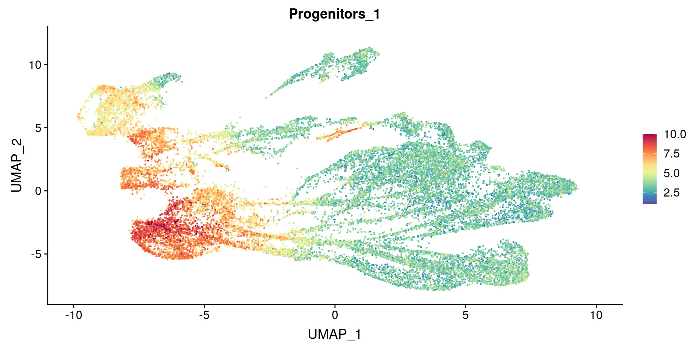
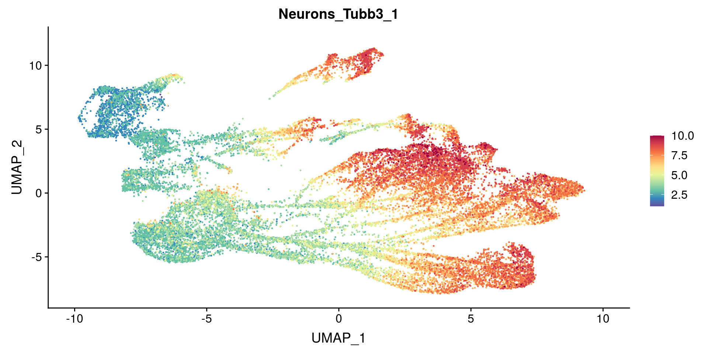
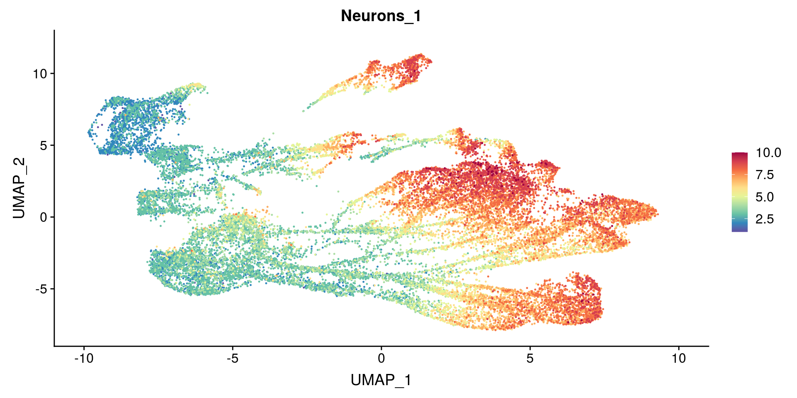
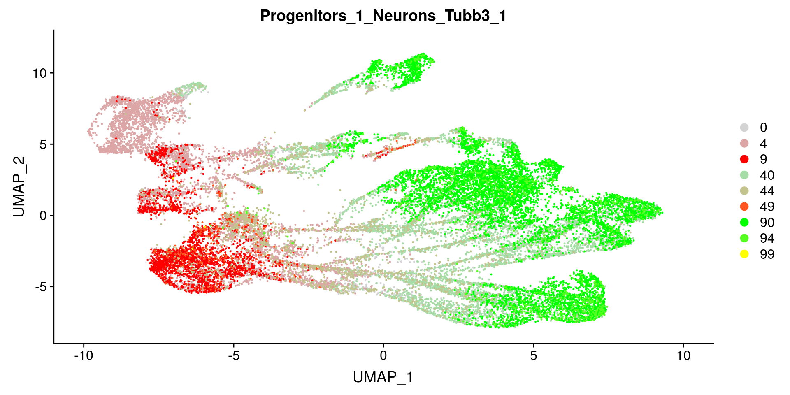
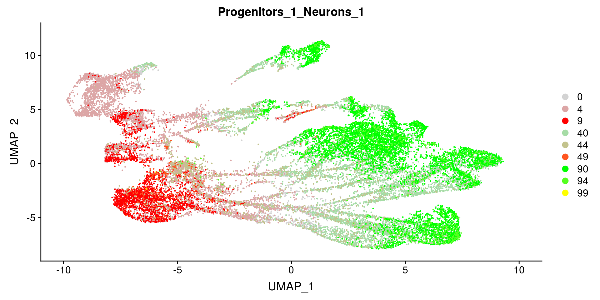

3 Visualize cell state scores
3.1 On UMAP embeddings
3.1.1 Single scores
for (i in seq(1:length(scores))){
print(FeaturePlot(object = dat.seurat,
features = scores[i],
cols = rev(brewer.pal(10,"Spectral")),
reduction = "umap",
order = TRUE,
pt.size = 0.2))}
3.1.2 Double scores
p <- FeaturePlot(object = dat.seurat,
features = c(scores[1], scores[2]),
cols = c("lightgrey", "#ff0000", "#00ff00"),
reduction = "umap",
order = TRUE,
pt.size = 0.2,
combine = FALSE,
blend = TRUE)
print(p[[3]])
p <- FeaturePlot(object = dat.seurat,
features = c(scores[1], scores[3]),
cols = c("lightgrey", "#ff0000", "#00ff00"),
reduction = "umap",
order = TRUE,
pt.size = 0.2,
combine = FALSE,
blend = TRUE)
print(p[[3]])
3.2 Check distribution of the scores
for (i in seq(1:length(scores))){
print(scores[i])
print(summary(dat.seurat@meta.data[,scores[i]]))}
# With TUBB3
FeatureScatter(
object = dat.seurat,
feature1 = scores[1],
feature2 = scores[2],
cells = NULL,
group.by = NULL,
cols = NULL,
pt.size = 0.2,
shape.by = NULL,
span = NULL,
smooth = FALSE,
combine = TRUE,
slot = "data"
)
# Without TUBB3
FeatureScatter(
object = dat.seurat,
feature1 = scores[1],
feature2 = scores[3],
cells = NULL,
group.by = NULL,
cols = NULL,
pt.size = 0.2,
shape.by = NULL,
span = NULL,
smooth = FALSE,
combine = TRUE,
slot = "data"
)